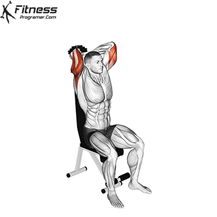
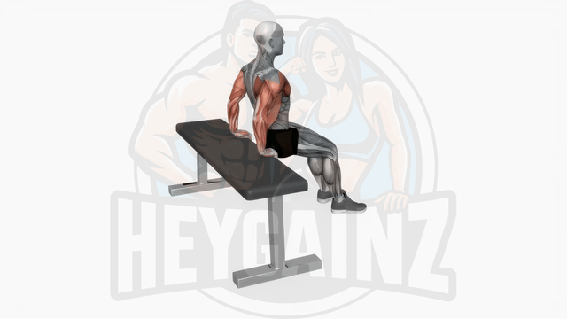

Day 1: Chest and Triceps
Chest Exercises:
Flat Dumbbell Press
Flat Dumbbell Press: A great exercise for building chest strength and size. Keep your back flat and press the dumbbells up with controlled movement.

Incline Dumbbell Press
Incline Dumbbell Press: Targets the upper chest. Ensure to keep your elbows at a 45-degree angle to maximize effectiveness.

Decline Dumbbell Press
Decline Dumbbell Press: Focuses on the lower part of the chest. Maintain a steady motion throughout the exercise.

Cable Flies
Cable Flies: Overhead extension movements are particularly useful in targeting the long head of the triceps muscle.

Triceps Exercises:
Seated Dumbell Tricep Extension
Overhead Pullovers: Effective for triceps and chest. Keep your arms slightly bent and bring the weight down to chest level.
Kickbacks
Kickbacks: Targets the triceps. Make sure to keep your upper arms stable while extending your forearms.

Rope Cable Triceps pulldown
Rope Cable Triceps Extension: Focuses on triceps with a full range of motion. Keep your elbows close to your body.

Bench Dip
Bench Dip: Great for triceps and chest. Ensure to keep your back straight and lower yourself slowly.
Day 2: Back and Biceps
Back Exercises
Lat Pulldown
Lat Pulldown: Targets the latissimus dorsi muscles. Pull the bar down towards your chest with controlled motion.

Rowing
Rowing: Works the entire back. Keep your back straight and pull the weight towards your torso.
Bent Over Rows
Bent Over Rows: Engages the back muscles. Bend at the waist and keep your back straight while rowing the weights.

Single Arm Dumbbell Row
Single Arm Dumbbell Row: Focuses on the lats and rhomboids. Ensure a full range of motion while pulling the dumbbell towards your hip.

Biceps Exercises
Hammer Curls
Hammer Curls: Works the biceps and forearms. Keep your elbows close to your sides while curling the weights.

Curl Rod
Curl Rod: Isolates the biceps with a barbell curl. Keep your back straight and avoid swinging the weights.

Preacher Curls
Preacher Curls: Targets the lower biceps. Use a preacher bench to stabilize your arms during the curl.
Concentration Curls
Concentration Curls: Focuses on the peak of the bicep. Perform the exercise slowly for maximum contraction.

Day 3: Legs and Shoulders
Leg Exercises
Lunges
Lunges: Strengthens the legs and glutes. Take a large step forward and lower your body until both knees are at 90 degrees.

Squats
Squats: A fundamental exercise for building leg strength. Keep your back straight and squat down until your thighs are parallel to the floor.

Leg Raise
Leg Raise: Targets the lower abs and hip flexors. Keep your legs straight and lift them to a 90-degree angle with controlled motion.

Calf Raises
Calf Raises: Strengthens the calves. Stand on the edge of a step and raise your heels as high as possible.

Shoulders Exercises
Seated shoulder press (Dumbbell)
Front Raise (Dumbbell): Focuses on the front delts. Lift both the dumbbells straight up the head and both your arms should touch ears.

front Raises
front Raises: Works the shoulders and traps. Raise your arms to the front until they are level with your shoulders.

Face Pulls
Face Pulls: Targets the rear delts and upper back. Pull the cable towards your face while keeping your elbows high.

Arnold dumble press
Arnold dumble press: Focus on maintaining proper form, keeping a workout log, warming up, and having a clear gym plan to maximize muscle growth and prevent injuries.

Day 4: Chest and Triceps
Chest Exercises
Flat Barbell Press
Flat Barbell Press: Builds overall chest strength. Keep your feet flat on the ground and press the barbell up with control.

Inclined Barbell Press
Incline Barbell Press: Targets the upper chest. Maintain a slight incline and press the barbell up while keeping your elbows at 45 degrees.

Decline Dumbbell Press
Decline Dumbbell Press: Focuses on the lower part of the chest. Maintain a steady motion throughout the exercise.

Cable Flies
Cable Flies: Overhead extension movements are particularly useful in targeting the long head of the triceps muscle.

Triceps Exercises:
Seated Dumbell Tricep Extension
Overhead Pullovers: Effective for triceps and chest. Keep your arms slightly bent and bring the weight down to chest level.
Kickbacks
Kickbacks: Targets the triceps. Make sure to keep your upper arms stable while extending your forearms.
Rope Cable Triceps pulldown
Rope Cable Triceps Extension: Focuses on triceps with a full range of motion. Keep your elbows close to your body.
Bench Dip
Bench Dip: Great for triceps and chest. Ensure to keep your back straight and lower yourself slowly.
Day 5: Back and Biceps
Back Exercises
Lat Pulldown
Lat Pulldown: Targets the latissimus dorsi muscles. Pull the bar down towards your chest with controlled motion.
Rowing
Rowing: Works the entire back. Keep your back straight and pull the weight towards your torso.
T-Bar
T-Bar: To do a T-bar row, hinge at hips, pull barbell to chest, keep back straight.

Single Arm Dumbbell Row
Single Arm Dumbbell Row: Focuses on the lats and rhomboids. Ensure a full range of motion while pulling the dumbbell towards your hip.
Biceps Exercises
Hammer Curls
Hammer Curls: Works the biceps and forearms. Keep your elbows close to your sides while curling the weights.
Curl Rod
Curl Rod: Isolates the biceps with a barbell curl. Keep your back straight and avoid swinging the weights.
Preacher Curls
Preacher Curls: Targets the lower biceps. Use a preacher bench to stabilize your arms during the curl.
Concentration Curls
Concentration Curls: Focuses on the peak of the bicep. Perform the exercise slowly for maximum contraction.
Day 6: Legs and Shoulders
Leg press
Leg press
Leg press: The leg press is a compound lower-body exercise performed on a leg press machine. It targets the quadriceps, hamstrings, and glutes. Sitting with your back against the pad, you push the platform away using your legs, then slowly return.

Squats
Squats: A fundamental exercise for building leg strength. Keep your back straight and squat down until your thighs are parallel to the floor.
Leg Raise
Leg Raise: Targets the lower abs and hip flexors. Keep your legs straight and lift them to a 90-degree angle with controlled motion.
Calf Raises
Calf Raises: Strengthens the calves. Stand on the edge of a step and raise your heels as high as possible.
Shoulders Exercises
Seated shoulder press (Dumbbell)
Front Raise (Dumbbell): Focuses on the front delts. Lift both the dumbbells straight up the head and both your arms should touch ears.
front Raises
front Raises: Works the shoulders and traps. Raise your arms to the front until they are level with your shoulders.
Face Pulls
Face Pulls: Targets the rear delts and upper back. Pull the cable towards your face while keeping your elbows high.
Arnold dumble press
Arnold dumble press: Focus on maintaining proper form, keeping a workout log, warming up, and having a clear gym plan to maximize muscle growth and prevent injuries.